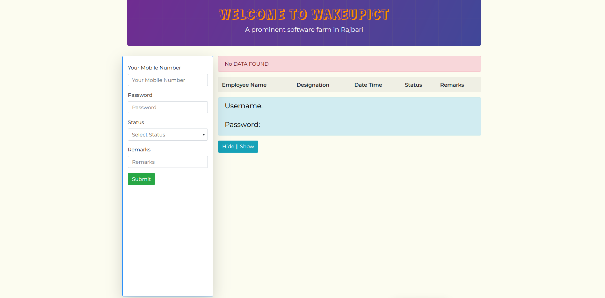

An attendance management system refers to an organization's approach
to tracking employee time and attendance information. An accurate
attendance and time tracking system helps you save time and effort
in calculating your employees' working hours.

This system is developed to store information about the employees
work time and office time activity. So that, end of the month it
could be calculated that how much time a employee spend in the
office. The count for the cup of coffees are also included inside
it.
The system is developed back in September, 2021. Since then Wake UP
ICT is using the system to track there office employees work time.
Get the application with the database. Then follow the process to
install the system:
-
Keep the files in the server. (Inside 'xampp/htdocs' if local)
- Upload the database in phpmyadmin
-
Connect the database to the system by add the database name on
config.php &
functionConfig.php both config files as follows.
$servername = "localhost";
$username = "root";
$password = "";
$dbname = "attendance_management_system";
- Check your server URL
The system could be used by the following users:
- Employee
- Admin
- HR Manager
Employee: All Employees can Check In(Enter),
Check Out(leave) and manage there break status including with the
submission for coffee using the system. To insert the status
employee will have to type there login username as contact(or
other number) and password then select the desired status from the
option and click inter. Employees can change there password and
manager there office in and out time after logging in into the
panel. In order to login employee has to use the same process as
the manage status just have to select the option login.
- Manage Status
- Manage Office Time
- Change Password
Admin: An admin is also an employee. So, he can
also do the same as an employee can do. Admin can see and manage
each employees attendance report and coffee report for each month.
He can also inactive and delete an employee from the employees
list.
- Manage Status
- Manage Office Time
- Change Password
- Attendance Report
- Coffee Report
- Employee Manage
HR Manager: An manager is also an employee. So,
he can also do the same as an employee can do & also the same as
an admin can. The plus is the HR manager can also mark employee
using a foul status if an employee do something against the rules.
- Manage Status
- Manage Office Time
- Change Password
- Attendance Report
- Coffee Report
- Employee Manage
- Employee Penalty
In order to change password user must give the old password and then
give the new password. And the password and confirm new password
again to confirm and then submit to finally change the password.
Just simplify inserting the start and leave office time and save
will set the office enter and leave time for you.
Select Employee name you want to view the attendance of including
with desired month and year. Report will be shown. From here that
employees enter time, break start & end time and leave time will be
found. The penalty list for that employee will also been shown on
attendance report page.
Just by selecting the month and year, list every employees cups of
coffee will be shown.
On this panel active employees can be inactive and inactive
employees can be activated. Also employees can be deleted using this
list.
If any employee break any rules then the HR manager will be able to
mark penalty to that employee. By selecting the employee a give a
reason why that employee is marked will do it. The maked information
will be seen in attendance report.